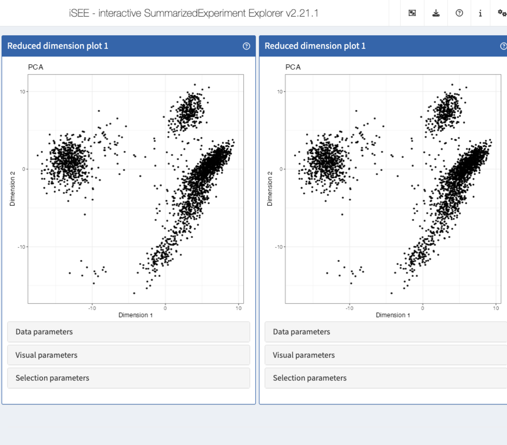

Extending iSEE
Federico Marini1, Kevin Rue-Albrecht2, Charlotte Soneson3, Aaron Lun4, Najla Abassi5
Source:vignettes/d05_extending_iSEE.Rmd
d05_extending_iSEE.Rmd
Writing iSEE extensions
In this vignette, we illustrate how to:
- Extend an existing panel class into a new panel class
- Derive a new panel class from an existing panel
Load example data
library("iSEE")
sce <- readRDS(
system.file("datasets", "sce_pbmc3k.RDS", package = "iUSEiSEE")
)Philosophy
iSEE panels are implemented as S4 classes that store the state of each panel in designated slots, and most of the functionality is implemented as S4 methods that describe various behavioural aspects of each panel class.
As a result, new classes can be created simply by inheritance from existing classes, overwriting methods to produce a different behaviour.
Deriving an S4 class
In this demo, let us create a new class called
ReducedDimensionHexagonPlot, that inherits from the
existing class ReducedDimensionPlot() (implemented in the
iSEE
package).
The objective is to produce a panel that displays the same
information as the original ReducedDimensionPlot() panel,
but summarising data points into hexagonal bins.
One major motivation for this functionality is that arbitrarily large data sets comprising many data points may be summarised into a modest number of hexagonal bins, providing a boost in speed when rendering the plot.
However, this is not without caveats:
- Summarising can take many forms (e.g., counting, averaging).
- The ideal number of bins may be different for different data sets.
To proceed, the new class needs at least one additional slot to store the number of hexagonal bins to create (i.e., a resolution for the plot).
setClass("ReducedDimensionHexagonPlot", contains="ReducedDimensionPlot",
slots=c(BinResolution = "numeric"))To properly initialise instances of the new class, the new slot must be populated with a default value in the event that users do not specify a bin resolution.
For this, we need to create a new method for the generic
initialize() and the new class. We set the default
resolution to 20 hexagonal bins along each axis.
Creating a constructor function
It is best practice to give users a function to create objects a particular class. Traditionally, the function is named identically to the class.
In this example, the function passes all its arguments to the
new() function. This is standard practice in iSEE, where
the arguments for constructor functions are typically the values of the
various slots that describe the initial state of the panel.
ReducedDimensionHexagonPlot <- function(...) {
new("ReducedDimensionHexagonPlot", ...)
}At this point, we can already demonstrate that we have a functional new panel class… that is a carbon copy of the parent class it inherits from!
app <- iSEE(sce, initial = list(
ReducedDimensionHexagonPlot(PanelWidth = 6L),
ReducedDimensionPlot(PanelWidth = 6L)
))
How can we even tell which is which?!
Changing the public panel name
The generic .fullName() declares the label shown in the
interface, at the top of each panel.
Let us create a method for the new class, that gives it a different name, highlighting the hexagonal binning in the plot.
setMethod(".fullName", "ReducedDimensionHexagonPlot",
function(x) "Hexagonal reduced dimension plot")Let’s launch the app to see the effect
app <- iSEE(sce, initial = list(
ReducedDimensionHexagonPlot(PanelWidth = 6L),
ReducedDimensionPlot(PanelWidth = 6L)
))Changing the background panel colour
Similarly, the generic .panelColor() declares the
background colour of the panel header (as well as the colour of brushes
for compatible panels).
Let us create a method for the new class, that gives it a different colour.
setMethod(".panelColor", "ReducedDimensionHexagonPlot", function(x) "#991717")Let’s launch the app to see the effect
app <- iSEE(sce, initial = list(
ReducedDimensionHexagonPlot(PanelWidth = 6L),
ReducedDimensionPlot(PanelWidth = 6L)
))Altering the user interface
At this point, there is still no component in the user interface to control the resolution value store in the new slot.
A number of S4 methods control the interface elements displayed in the various groups of parameters located under each panel.
Here, we are discussing a parameter that will control the size of bins. Moreover, we are about to replace data points by hexagonal bins, meaning that the visual parameters controlling the size of data points are about to become useless.
Thus, the generic .defineVisualSizeInterface() is the
natural choice to use for replacing the size parameters of the parent
ReducedDimensionHexagonPlot() class by a new HTML element
that displays a numeric input allowing users to change the hexagonal bin
resolution.
setMethod(".defineVisualSizeInterface", "ReducedDimensionHexagonPlot", function(x) {
plot_name <- .getEncodedName(x)
tagList(
.numericInput.iSEE(x, "BinResolution", label="Bin resolution:",
min=1, value=x[["BinResolution"]], step = 1)
)
})
app <- iSEE(sce, initial = list(
ReducedDimensionHexagonPlot(PanelWidth = 6L, VisualBoxOpen = TRUE, VisualChoices = "Size"),
ReducedDimensionPlot(PanelWidth = 6L, VisualBoxOpen = TRUE, VisualChoices = "Size")
))Altering the panel output
Time for the most exciting and challenging task: making the panel produce a different type of plot!
To this end, the generic .generateDotPlot() is key.
Given a panel state, axis labels, and an environment that contains the
SummarizedExperiment() object and possibly other relevant
values such as incoming selections,
setMethod(".generateDotPlot", "ReducedDimensionHexagonPlot", function(x, labels, envir) {
plot_cmds <- list()
plot_cmds[["ggplot"]] <- "ggplot() +"
color_lab <- "Count"
new_aes <- .buildAes()
plot_cmds[["hex"]] <- sprintf(
"ggplot2::geom_hex(%s, bins = %i, plot.data) +",
new_aes,
as.integer(x[["BinResolution"]])
)
plot_cmds[["theme_base"]] <- "theme_bw()"
list(plot=.textEval(plot_cmds, envir), commands=plot_cmds)
})
app <- iSEE(sce, initial = list(
ReducedDimensionHexagonPlot(PanelWidth = 6L, VisualBoxOpen = TRUE, VisualChoices = "Size"),
ReducedDimensionPlot(PanelWidth = 6L, VisualBoxOpen = TRUE, VisualChoices = "Size")
))Adding reactivity
At this point, if users change the bin resolution using the newly added interface element, they will notice that nothing seems to happen.
That is because we have not yet added a Shiny observer responding to this particular event.
The .createObservers() generic is invoked to create
observers for all the instances of each panel class added to the user
interface.
The .createProtectedParameterObservers() function
provides a convenient way to create observers responding to events that
change the data being plotted and potentially break active multiple
selections, if any. This function automatically ensures that any change
of value in the interface element is updated in the panel state and
triggers re-rendering of the panel plot.
setMethod(".createObservers", "ReducedDimensionHexagonPlot", function(x, se, input, session, pObjects, rObjects) {
callNextMethod()
plot_name <- .getEncodedName(x)
.createProtectedParameterObservers(plot_name,
fields=c("BinResolution"),
input=input, pObjects=pObjects, rObjects=rObjects)
invisible(NULL)
})With the new observer in place, we can launch the app one more time, to toy with the bin resolution and watch the panel plot being re-rendered each time.
app <- iSEE(sce, initial = list(
ReducedDimensionHexagonPlot(PanelWidth = 6L, VisualBoxOpen = TRUE, VisualChoices = "Size"),
ReducedDimensionPlot(PanelWidth = 6L)
))Further work
At this point, there are many more aspects of the plotting behaviour that we should test and adjust, making sure that all the choices of parameters presented to end users are sensible, and that all combinations of parameters are handled without error.
However, that work represents many hours of careful testing and implementation that is far beyond the scope of this short package demo.
Adventurous souls may be interested in a more mature implementation
of the ReducedDimensionHexPlot() panel class, implemented
in the iSEEhex
package. Source code can be found on GitHub on this
page.
Additional resources
The book Extending iSEE is the original effort from developers to provide guidance for writing iSEE extensions using example use cases for illustration.
The more recent iSEETheBook launched a new effort to provide a comprehensive view of the ecosystem for all three major groups of users:
- End users interacting with the graphical user interface in their web browser.
- Developers of scripted web-applications using iSEE to showcase data sets.
- Developers of extensions contributing new functionality and packages to the iSEE ecosystem.
The iSEE website is the place to watch for links to additional resources.
Session info
Session info
sessionInfo()
#> R version 4.5.1 (2025-06-13)
#> Platform: x86_64-pc-linux-gnu
#> Running under: Ubuntu 24.04.2 LTS
#>
#> Matrix products: default
#> BLAS: /usr/lib/x86_64-linux-gnu/openblas-pthread/libblas.so.3
#> LAPACK: /usr/lib/x86_64-linux-gnu/openblas-pthread/libopenblasp-r0.3.26.so; LAPACK version 3.12.0
#>
#> locale:
#> [1] LC_CTYPE=en_US.UTF-8 LC_NUMERIC=C
#> [3] LC_TIME=en_US.UTF-8 LC_COLLATE=en_US.UTF-8
#> [5] LC_MONETARY=en_US.UTF-8 LC_MESSAGES=en_US.UTF-8
#> [7] LC_PAPER=en_US.UTF-8 LC_NAME=C
#> [9] LC_ADDRESS=C LC_TELEPHONE=C
#> [11] LC_MEASUREMENT=en_US.UTF-8 LC_IDENTIFICATION=C
#>
#> time zone: Etc/UTC
#> tzcode source: system (glibc)
#>
#> attached base packages:
#> [1] stats4 stats graphics grDevices utils datasets methods
#> [8] base
#>
#> other attached packages:
#> [1] iSEE_2.20.0 SingleCellExperiment_1.30.1
#> [3] SummarizedExperiment_1.38.1 Biobase_2.68.0
#> [5] GenomicRanges_1.60.0 GenomeInfoDb_1.44.1
#> [7] IRanges_2.42.0 S4Vectors_0.46.0
#> [9] BiocGenerics_0.54.0 generics_0.1.4
#> [11] MatrixGenerics_1.20.0 matrixStats_1.5.0
#> [13] BiocStyle_2.36.0
#>
#> loaded via a namespace (and not attached):
#> [1] rlang_1.1.6 magrittr_2.0.3 shinydashboard_0.7.3
#> [4] clue_0.3-66 GetoptLong_1.0.5 compiler_4.5.1
#> [7] mgcv_1.9-3 png_0.1-8 systemfonts_1.2.3
#> [10] vctrs_0.6.5 pkgconfig_2.0.3 shape_1.4.6.1
#> [13] crayon_1.5.3 fastmap_1.2.0 XVector_0.48.0
#> [16] fontawesome_0.5.3 promises_1.3.3 rmarkdown_2.29
#> [19] UCSC.utils_1.4.0 shinyAce_0.4.4 ragg_1.4.0
#> [22] xfun_0.53 cachem_1.1.0 jsonlite_2.0.0
#> [25] listviewer_4.0.0 later_1.4.2 DelayedArray_0.34.1
#> [28] parallel_4.5.1 cluster_2.1.8.1 R6_2.6.1
#> [31] bslib_0.9.0 RColorBrewer_1.1-3 jquerylib_0.1.4
#> [34] Rcpp_1.1.0 iterators_1.0.14 knitr_1.50
#> [37] httpuv_1.6.16 Matrix_1.7-3 splines_4.5.1
#> [40] igraph_2.1.4 tidyselect_1.2.1 abind_1.4-8
#> [43] yaml_2.3.10 doParallel_1.0.17 codetools_0.2-20
#> [46] miniUI_0.1.2 lattice_0.22-7 tibble_3.3.0
#> [49] shiny_1.11.1 evaluate_1.0.4 desc_1.4.3
#> [52] circlize_0.4.16 pillar_1.11.0 BiocManager_1.30.26
#> [55] DT_0.33 foreach_1.5.2 shinyjs_2.1.0
#> [58] ggplot2_3.5.2 scales_1.4.0 xtable_1.8-4
#> [61] glue_1.8.0 tools_4.5.1 colourpicker_1.3.0
#> [64] fs_1.6.6 grid_4.5.1 colorspace_2.1-1
#> [67] nlme_3.1-168 GenomeInfoDbData_1.2.14 vipor_0.4.7
#> [70] cli_3.6.5 textshaping_1.0.1 S4Arrays_1.8.1
#> [73] viridisLite_0.4.2 ComplexHeatmap_2.24.1 dplyr_1.1.4
#> [76] gtable_0.3.6 rintrojs_0.3.4 sass_0.4.10
#> [79] digest_0.6.37 SparseArray_1.8.1 ggrepel_0.9.6
#> [82] rjson_0.2.23 htmlwidgets_1.6.4 farver_2.1.2
#> [85] htmltools_0.5.8.1 pkgdown_2.1.3 lifecycle_1.0.4
#> [88] httr_1.4.7 shinyWidgets_0.9.0 GlobalOptions_0.1.2
#> [91] mime_0.13